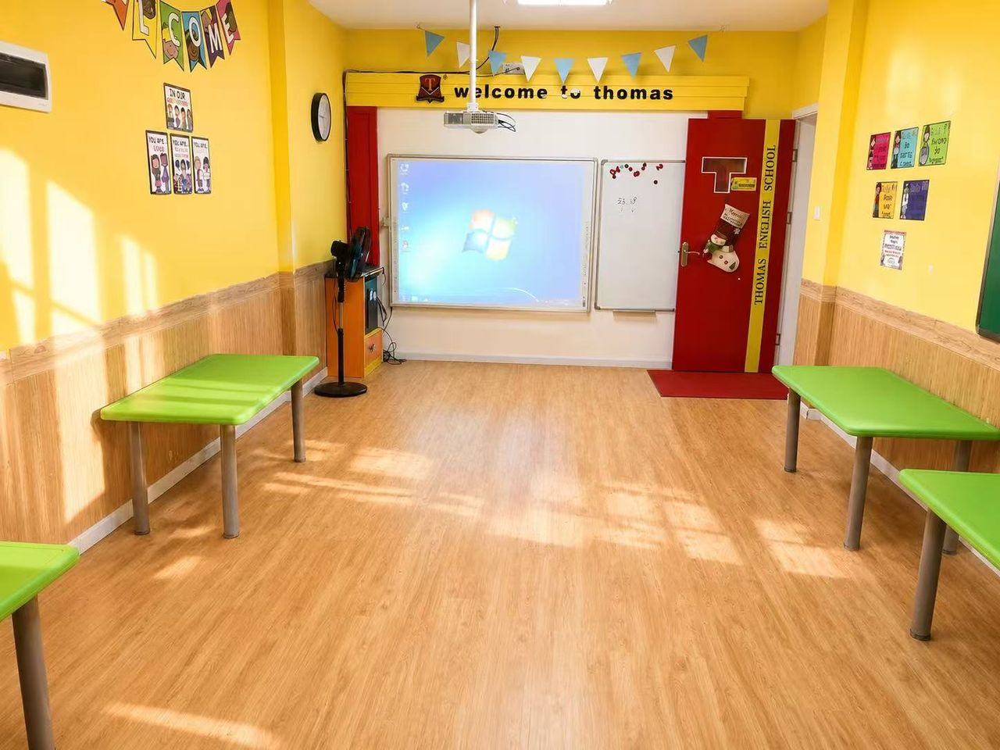

让孩子知道一件事怎样算完成
在托马斯学习馆（王家湾人信汇校区），任务意识是幼小衔接的重要内容。我们关注孩子能否听懂要求、记住需要带的物品、开始做事、完成后检查，并把结果交回。入学准备中的任务可以很小：一次材料整理、一段故事复述、一项轮流合作，都能提供练习机会。
任务意识需要与理解能力、时间观念和求助表达一起培养。孩子没有开始时，老师会观察是没有听清、没有记住、不会第一步，还是担心做错，再调整提示。把具体卡点弄清楚，才容易选择合适的支持方式。校区通过日常观察和阶段反馈，将这些过程纳入成长记录。
倾听与复述，让要求变得清楚
我们使用听指令、口头复述和连续动作等方法，帮助孩子把听到的语言与行动连接起来。要求从简短、清楚开始，再根据能力增加步骤。孩子可以先用自己的话说一遍接下来要做什么；复述的目的在于确认理解，也给老师发现遗漏和重新说明的机会。
例如，拿好水杯、放回书本、再回到座位，是一组可以拆开的生活要求。老师会看孩子是否理解物品、位置和顺序，必要时用动作或任务卡辅助。熟悉后再逐步撤去提示，观察孩子能否自己组织过程。
计时、检查与交回，都可以温和练习
计时器帮助孩子感知一段时间，任务卡让步骤更直观。我们把工具用于安排和提醒，避免把每项任务变成赶速度。对刚接触的内容，先理解和尝试，再逐步练习在合适时间内完成。孩子能够说明自己正在做什么、下一步是什么，也是任务意识正在发展的表现。
完成后的检查与交回同样有意义。孩子可以看一看材料有没有遗漏、桌面是否收好、成果应交给谁。老师鼓励孩子对照要求回看，也鼓励遇到问题时具体求助。一次任务既有开始，也有清楚的结束，孩子才有机会体验对一件小事负责的完整过程。
小班关注与家庭任务保持一致
托马斯人信汇校区全日班平均约10人，班主任与分科教师从不同活动中观察孩子。入班观察、中期与结课反馈会关注倾听、专注、自理、表达和任务意识，把需要练习的环节说明白。不同孩子可能需要不同的起点，不用同一种速度要求所有人。
家庭配合可以选择一件固定的小事，保持指令、材料位置和检查方式相对稳定，让孩子逐步承担更多步骤。家长无需把所有生活都变成训练，清楚、适量和持续更方便坚持。托马斯学习馆王家湾人信汇校区位于人信汇二期一号门旁，欢迎结合孩子当前的做事习惯，了解入班观察与任务练习安排。
家长常问
连续指令是不是越长越好？
任务的步骤要与孩子当前理解、记忆和行动能力匹配。我们从清楚的短要求开始，观察孩子能否理解并完成，再逐步增加环节。复述、动作和任务卡都可以帮助确认理解。进阶依据实际表现安排，保持可参与性，让孩子有机会完整完成一件事。
孩子总是等提醒，可以怎样支持？
先分清需要提醒的是开始、顺序、材料还是交回，再给有针对性的提示。固定的任务位置和清楚的收尾方式，能够让要求更容易理解。校区通过日常观察把这些信息放进反馈，帮助家长看到具体卡点，再讨论怎样逐步减少成人替代与反复催促。
任务意识与学科活动有什么关系？
语文表达、数学操作和英语互动都需要听清要求、保持参与和完成收尾。分科教学与班主任观察相配合，可以从不同任务看孩子的做事过程。校区希望这些能力在多个场景反复使用，家长也可以关注孩子怎样完成，而不只看最后交出的结果。
资料来源：资料来源：校区提供的课程、教学与服务介绍，由校区使用AI辅助整理与编辑。具体班型、任课、进度及服务细则以当期沟通和书面规则为准。 汉阳幼小衔接 任务意识 倾听指令 托马斯学习馆
先了解课程，再预约参观
适合的课程因孩子年龄、基础与班级安排而异。可联系老师了解当期教学安排、收费及开放参观时间。